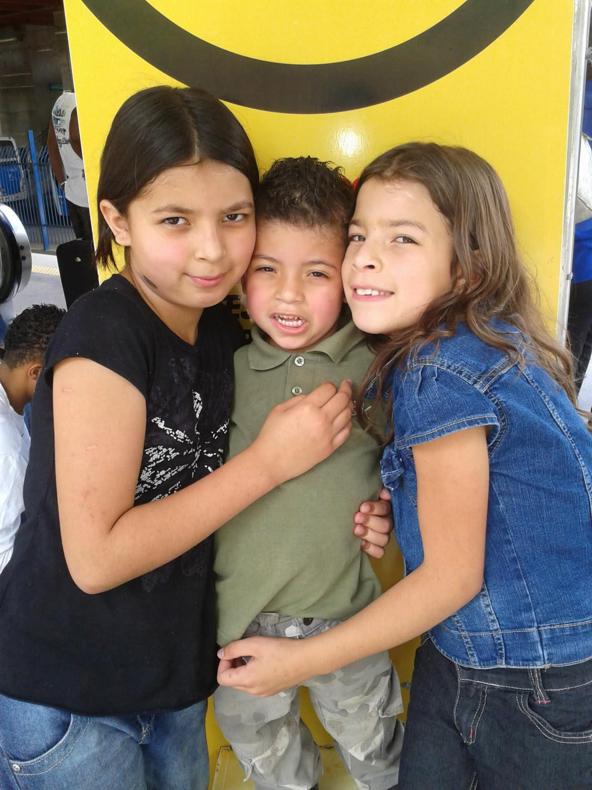
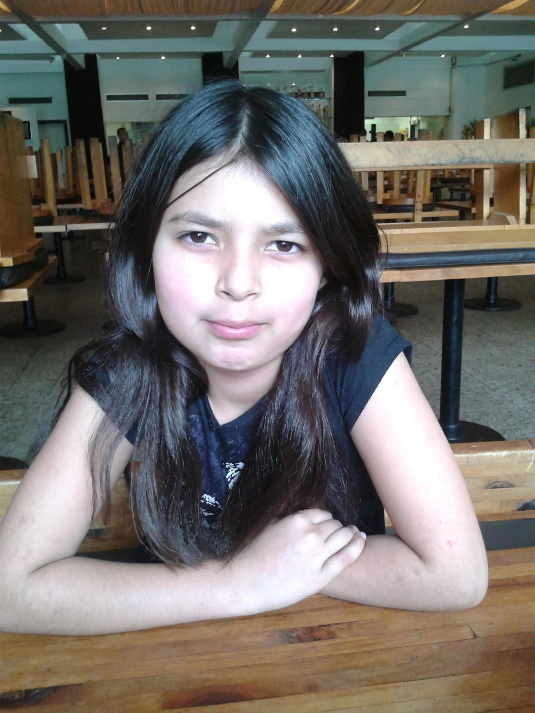
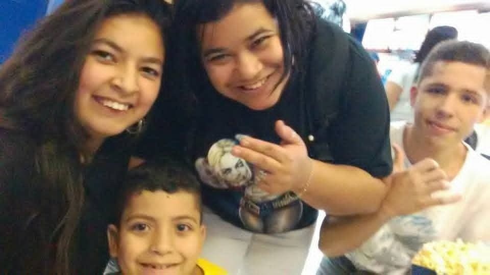

28 · 05 · HOJE É SEU DIA
Feliz
Aniversário,
Mayara
Uma pessoa que transforma cuidado em amor e
momentos simples
em lembranças eternas.
QUEM É A MAYARA
Cuidado, presença e um amor enorme
pela família.
A Mayara é daquelas pessoas que organizam o mundo ao redor sem fazer
alarde.
Obstinada, atenta, sempre um passo à frente — não para
aparecer, mas para que nada
falte a ninguém.
Tem o dom raro de acolher. Lembra dos detalhes, manda
mensagem na hora certa,
aparece quando ninguém esperava. Nunca deixa alguém de lado, nunca
esquece quem
ama.
Ama a família como poucos amam. Reúne, escuta, cuida, abraça. E faz
tudo isso com uma
leveza que só quem ama de verdade consegue ter.
Onde ela passa, fica mais bonito. Onde ela ama, fica mais quente.
GALERIA
Pequenos retratos, grandes lembranças


